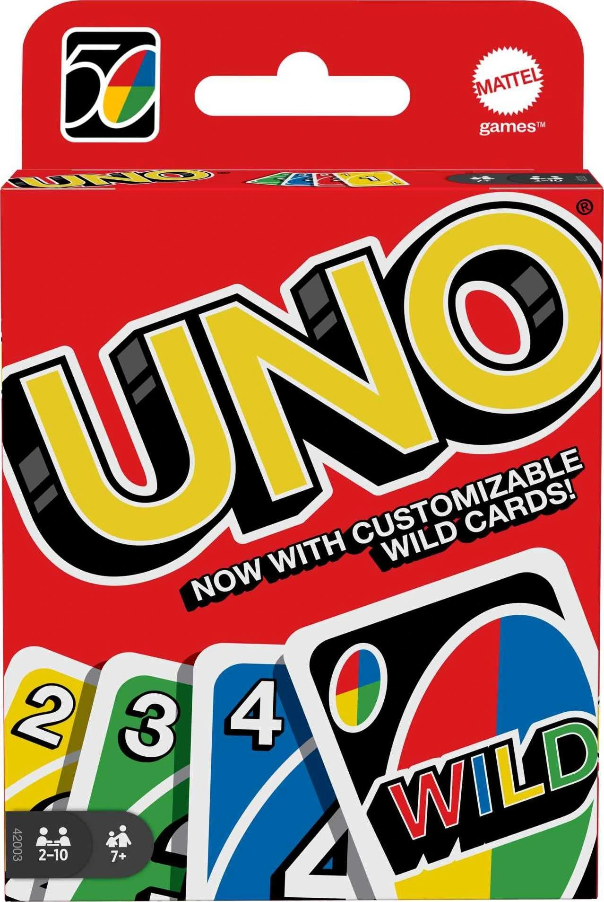

Uno

Uno is a classic card game that is easy to learn and fun for players of all ages.
- Uno is a game where players take turns matching a card from their hand with the current card shown on top of the deck.
- The objective is to be the first player to get rid of all your cards by playing them onto the discard pile.
- Players can play a card that matches the color or number of the top card, or they can play a Wild card to change the color.
- Uno is enjoyed for its simple rules, fast-paced gameplay, and the element of luck involved in drawing cards.
- Overall, Uno is a fun and engaging game that is perfect for family game nights and gatherings with friends.
- Uno is a game that I highly recommend to anyone looking for a lighthearted and entertaining card game experience.